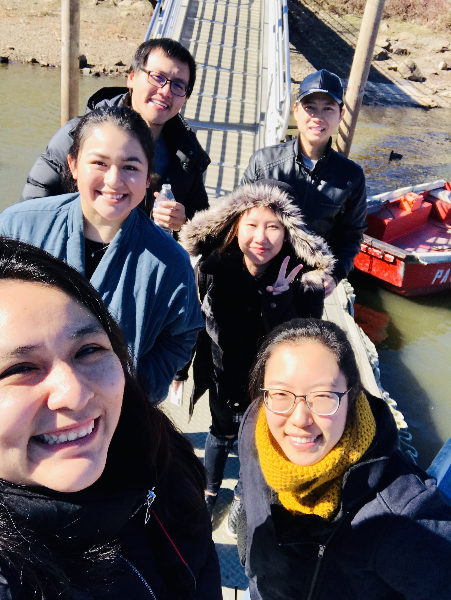
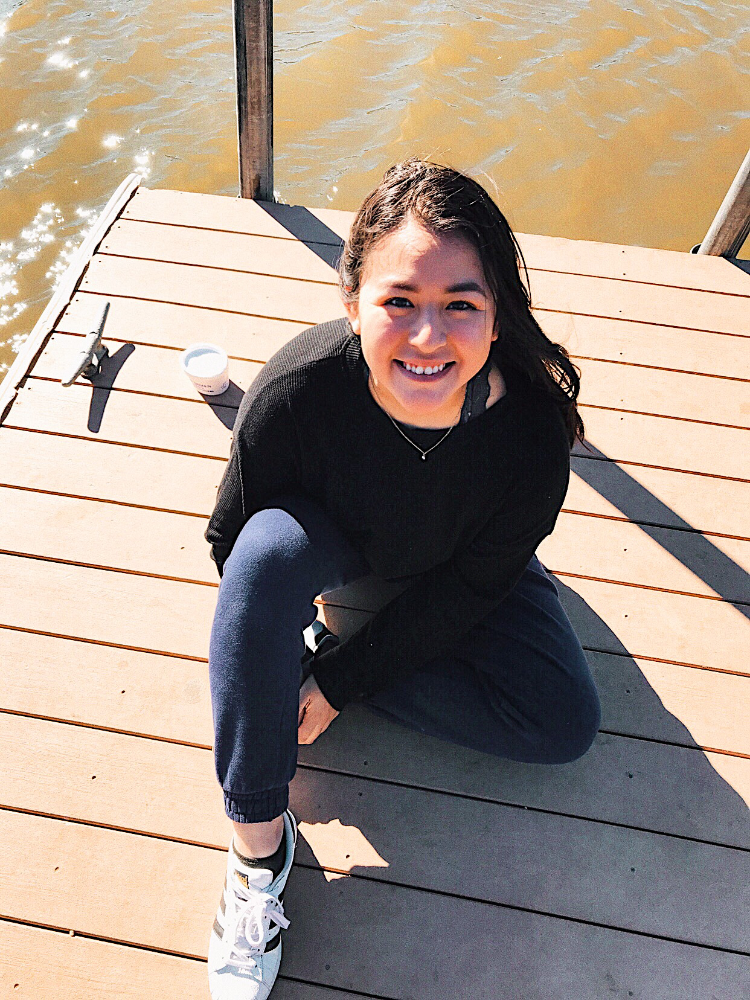
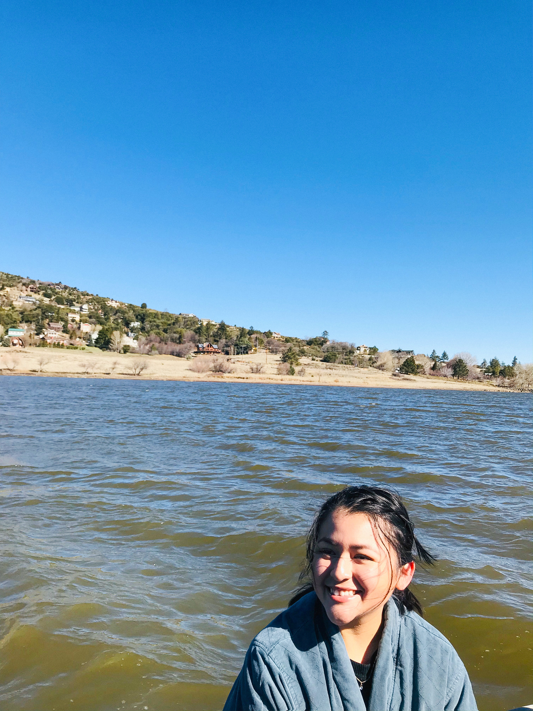

CUYAMACA
  My friends and I were tired of our typical routine and had the urge to get away for the weekend. We didn’t want to stress ourselves with the planning, so we quickly put our thinking hats on and began to think about where exactly we could go for a quick getaway that would allow us to recharge mentally and physically.
Since all we wanted to gain from this trip was relaxation, we initially knew that we didn’t want to go too far away from San Diego. So we decided to head over to Julian/Lake Cuyamaca because they’re both small towns, no chaos and it was only about an hour away.
BORREGO SPRINGS


This past weekend, my best friends and I left for a quick vacation to Borrego Springs. The drive up there was beautiful and nothing that we’d ever seen in the city before. Although it was 108 degrees the whole time we were there, we still enjoyed each others company by playing board games, watching movies, playing pool, making food, going to the pool and hot tub.